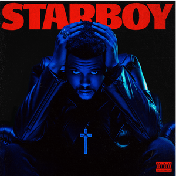

Starboy Deluxe
Starboy (Deluxe) es la edición de lujo del tercer álbum de estudio "Starboy" del artista canadiense The Weeknd. El álbum original se lanzó 7 años antes, y después de que "Die for You" empezara a recibir más reconocimiento del público desde 2022 en TikTok, y un remix de la canción se lanzó el 24 de febrero de 2023, con la participación de Ariana Grande. Abel anunció la edición de lujo del álbum el 10 de marzo en su tienda en línea. "Reminder (Remix)" y "Starboy (Remix)" se lanzaron 6-7 años antes y están incluidos en la lista de canciones junto con el remix de "Die for You". El álbum se lanzó el 14 de marzo de 2023, y la portada es la misma que la original, pero con un fondo negro sólido y texto en rojo. El álbum original cuenta con la colaboración de Daft Punk, Lana Del Rey, Kendrick Lamar y Future; la edición de lujo incluye remixes de Ariana Grande, Kygo, A$AP Rocky y Young Thug.